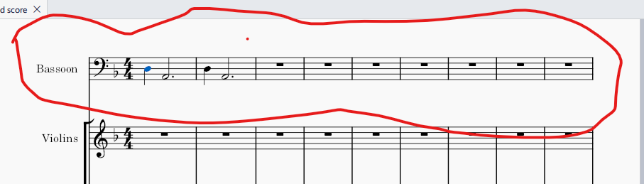

Uther Pendragon - Tone Poem
STORY
Uther Pendragon, a legendary figure in British mythology, was the father of King Arthur. According to the tales, Uther was a noble and powerful king of Britain. He desired Lady Igraine, the wife of Duke Gorlois, and sought the help of the wizard Merlin to disguise himself as Gorlois. Uther's plan succeeded, and he slept with Igraine, resulting in the conception of Arthur.
During his reign, Uther fought against invading Saxons, displaying his strength and leadership. However, his life was cut short by treachery and betrayal. Uther fell victim to a poisoned spear, leaving the kingdom in turmoil.
Despite his tragic end, Uther's legacy lived on through his son, Arthur, who would become the legendary King Arthur of Camelot. Uther's story is one of power, love, and the prophesied rise of a great king who would unite Britain and wield the legendary sword, Excalibur.
CONCEPTION
The piece was mostly composed in Musescore.
I should think of using instruments, improvisation, to
generate melodies and pieces more.
STORY OF COMPOSITION
I wanted to delve further into the King Arthur world and universe after writing my first tone poem: King Arthur. I wanted to create a musical universe from all the characters in the stories, and perhaps even create my own characters to enhance and extend the original legend as passed down traditionally.
My ambitions went even further: I wanted to use this composition as a basis for stories, novels and even plays.

Uther Pendragon, as the father of King Arthur, was the first specific character I wanted to invesitage and represent. This seemed like a good starting point to approach the legend from.
FORM
I broke the piece down into several sections, each of which represents a particular episode or painting of mood and character in Uther's story.
INTRO
--- The intro sets the tone of menace and power and glory for the piece
The introduction presents the Uther motif and suggests the dreamy yet urgent quality that characterises his life.
SECTION ONE
--- Desire for Lady Igraine
Uther sees Igraine from a distance. The ominous sound and motif of the bassoon is present. The beauty of Igraine. Uther's violent desire. Uther hides and retires
This section is in ternary form: A expresses Uther's power and unease, B the confusion of his feelings and A the transformation brought about by Lady Igraine.
This section contains a theme in small ternary form.
The ternary theme contains a plaintive melody in the bassoon in the a section to represent Uther's character, with minimal accompaniment in the exposition. The A' 1 recapitulation captures Igraine's character in the flute and string character of A' 2 represents the harmony in the theme of Uther that she suggests. The B section is more chromatic and polyphonic to build energy and tension.
transition: a long transition slows the tempo and changes the mood to prepare for the encounter with Merlin. This is a two part transition, with part1 deriving from section 1 and part II looking forward to section two
PART ONE: the bassoon, flute and strings mingle, playing motifs and snatches of melody, indicating their intertwined nature.
I found that a long transition (two parts) could almost compromise the meaning of the short ternary form before it because its length could override the meaning of the small ternary. I was termpted to cut it out, or shorten it, but wanted in the end to keep it, to see what the effect would be, thinking along Duke Ellington's lines: "If it sounds good, it is good".
SECTION TWO
--- Discussion with Merlin (magical)
Uther goes to see Merlin to see what he can do. He is haunted by Igraine's beauty. He feels that he is transformed. The bassoon changes into different instruments. The section is again in small ternary form. The intro and section 2A express the whistfulness with which Uther considers Lady Igraine. The syncopated rhythm denoting Uther is carried over from section 1 to indicate his dynamism, but it is smaller and more plaintive in character now. Section 2B increases rhythmic intensity and reinforces the idea of disguise with Uther's bassoon being tried out in different instruments. Section 2A' expresses more ebullient hope yet is still somewhat subdued
SECTION THREE
--- Disguise as Gorlois and seduction (mysterious)
The Uther motive is taken on by another instrument and rhythm altered.
SECTION FOUR
FOUR: The conception of Arthur
SECTION FIVE
FIVE: The Death of Gorlois
SECTION SIX
SIX: The Marriage to Igraine
SECTION SEVEN
SEVEN: The Birth of Arthur

INSTRUMENTATION
SECTION ONE
Uther - Bassoon. This seemed to me a fitting instrument, not to dominant like the brass, for a fine, subtle character, but one still possessing weighty authority.
Igraine: Flute
MOTIFS
I gave Uther a martial motif, played on the bassoon.ORCHESTRATION
Story
Story
ARRANGEMENT
PART ONE: Bassoon, low strings
PART TWO: Light Strings